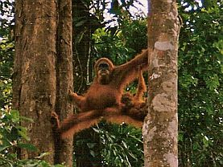
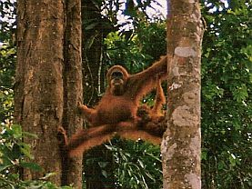
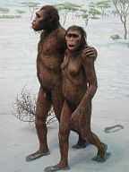

Bajar de las ramas complicó todo el asunto reproductivo para la especie. La hazaña de perpetuar nuestros genes, el impulso básico de evolución sobre el planeta, alcanzó entonces una nueva dimensión con el Homo sapiens. El baile de seducción se diversifica y nuestras complejas culturas otorgan cualidades características al cortejo y al emparejamiento entre personas que parece ser una constante entre humanos. Pongamos el caso del casamiento, por ejemplo; en cada cultura estudiada en el récord antropológico, esta unión entre parejas existe y la familia es el bloque básico que conforma todas nuestras sociedades. Puede que el maridaje sea distinto para cada población: algunos monógamos, otros polígamos, algunos para siempre, otros de forma temporal; sin embargo, la idea es básica y primordial entre nosotros.
Sobre el planeta, cada especie ha desarrollado diversas estrategias de supervivencia y reproducción. Estas estrategias nacen y son moldeadas por variables características para cada grupo y una de estas variables es la energía que cada cual invierte en la reproducción y la crianza; sin olvidar que este costo de energía tendrá su origen en la absoluta e innegable interacción entre la biología del animal y el hábitat en el que se desarrolle. No obstante, para comprender nuestro comportamiento actual no sólo es necesario conocer sobre nuestra biología y culturas sino también rastrear el camino por donde dimos nuestros primeros pasos bípedos y hacerlo desenterrando y estudiando fósiles, escudriñando más los genomas y observando a los demás miembros primates, buscando allí los orígenes de nuestra conducta.
Pues bien, en cuestiones de romance, la situación es la misma, es imprescindible que tomemos en cuenta el camino que nos trajo aquí y la conducta de los demás animales de nuestra familia. Observar y estudiar estas conductas no sólo conciernen a la ciencia sino a las ideologías y filosofías más relevantes de nuestros tiempos, como el conflicto inagotable entre los sexos. De hecho, el biólogo evolucionista Robert Trivers escribió en 1972 que “uno puede, en efecto, tratar a los sexos como si fueran especies distintas, el sexo opuesto siendo siempre una fuente relevante para producir el máximo de crías que sobrevivan”. Cabe, pues, recordar que los movimientos se deben a sus tiempos y a las culturas que los desarrollan, por ello, necesitan constantemente de actualización. Mientras más información adquirimos sobre lo que somos, mejor preparados estaremos para enfrentar los cambios requeridos de una especie como la nuestra que ha redactado sus propios derechos.
Pero regresemos a nuestro planteamiento principal. Sobre el planeta, no sólo el medio moldea al animal, el animal también modela al medio de acuerdo a los genes que lo conforman. Uno de los grandes ejemplos sobre esta dinámica ha sido el efecto del bipedalismo y el aumento del tamaño del cerebro humano sobre la mujer. El bipedalismo cambió nuestra anatomía, la pelvis y el canal de parto se estrecharon para facilitar la locomoción y el balance, pero estos cambios complicaron el nacimiento; especialmente en humanos que ahora venían con grandes cabezotas para acomodar las complejas computadoras que eran ahora sus cerebros. Esos bebés cabezones que tanto nos gustan nacen prematuramente, en comparación con otros primates, precisamente para que sus cabezas quepan por el ahora estrecho canal de su madre bípeda. Esta limitación origina a bebés humanos completamente indefensos; “carnada de leones”, los llama Robert Wright en su interesante libro El animal moral.
Las transformaciones, a su vez, dieron paso a otras más que han moldeado durante millones de años la danza humana hacia la reproducción de la especie. Nuestros recién nacidos arriban con sólo el 25% del cerebro de un adulto, en comparación con otros primates que nacen con el 35 y hasta el 61% de la capacidad cerebral adulta, algo que los provee con ciertas habilidades motoras que los bebés humanos no tienen.
Repasemos pues esta dura faena: embarazo se acorta para dar paso a un bebé indefenso y prematuro pero con un potencial cerebrazo en la cabeza; el recién nacido necesitará de más ayuda, lo que restará tiempo a la madre para otras cosas vitales, como buscar comida. La poca habilidad motora del bebé también la limita frente a predadores ya que tendrá las manos ocupadas con un bebé que no puede aferrarse a su espalda y que necesita de cuidados especiales. Es aquí donde entra el conocido ‘contrato sexual’ del que habla Helen Fisher, y ese agridulce efecto de lo que en zoología se llama la ‘inversión paternal masculina’ (MPI, male paternal investment), una variable con enormes efectos en la evolución de la conducta humana.
Los biólogos y zoólogos nos explican que en especies donde el MPI es bajo, es decir, que los padres sólo ponen el semen y desaparecen, la dinámica es la siguiente: los machos siempre quieren sexo mientras que las hembras no están seguras; ellas quieren evaluar la capacidad genética del animal que las dejará con un hijo para criar. El procedimiento cambia cuando la especie se caracteriza por un alto MPI, como en la humana. “De alguna forma, una alta inversión del padre hace que la dinámica básica subyacente entre el hombre y la mujer sea la explotación mutua”, escribe Wright.
Como dijimos antes, el hecho de que la cría sea completamente inútil e indefensa durante los primeros años de vida, obliga a que el macho se responsabilice de su supervivencia. Son conductas que observamos en las aves, si el compañero se va, otros animales se comerán los huevos o polluelos mientras la hembra busca comida, es mucho más sensible, en términos reproductivos, que el varón vele por ellos también. En los humanos ocurre lo mismo, aunque con sus connotaciones primates, por supuesto. El varón de la especie va a querer siempre sexo, la hembra no va a estar muy segura, sin embargo, para ambos ya hay mucho más en juego. La mujer ya está biológicamente esclavizada a alojar y alimentar a la cría durante nueve meses, a tener un parto doloroso y largo de un bebé indefenso durante varios años; la energía a invertir ya es suficiente como para que piense bien con quién tendrá sexo; más aún, con un alto MPI, ella también tendrá en cuenta lo que él puede ofrecerle más allá del semen: si va a invertir en el bebé y en la relación, ¿qué tanto tiene para dar? y ¿qué otras posibilidades tiene ella en el mercado?

El macho, por su parte, que puede repartir sus genes más libremente que la hembra, cuyas limitaciones la dejan a tener una cría por año, debe tener en cuenta otras estrategias; sabe que debe invertir energía en sus hijos si quiere garantizar su supervivencia, de hecho, estos grupos surgen precisamente porque los genes de padres que invirtieron en sus hijos tendían a sobrevivir pues la inversión daba frutos positivos. La baja inversión del macho, por su parte, resultaba en una alta mortandad de su descendencia. Por eso, la evolución de cualquier cualidad genética que cemente el amor del hombre por la mujer y por su cría, garantizará la supervivencia de esta descendencia y, a su vez, se mantendrá popularmente en los genomas de la especie. Así, entre Homo sapiens, el hombre vela por sus hijos pero tiende, si no ha sido moldeado de otra forma por su hábitat, a buscar medios para embarazar a otras.
Por su parte, la hembra buscará maneras diversas de evaluar qué tan comprometida está la pareja en mantener el contrato con ella, por lo menos hasta que la descendencia pueda mantenerse sola, y este conflicto entre ambos la hará también mucho más competitiva con otros animales de su mismo sexo, algo que no se observa entre grupos primates donde el MPI es bajo. Es decir, el objetivo femenino es monopolizar al padre para garantizar su inversión lo que incrementa la competencia. Para ello, los genes que promueven el amor romántico fueron favorecidos pues la atracción entre parejas consolida la transacción y aumenta las probabilidades de supervivencia de la cría. Esta dinámica entre el recorrido evolutivo de nuestra biología en las distintas sociedades humanas ha creado todo tipo de variantes amorosas, pero todas son guiadas por los mismos conceptos básicos que impulsan a los primates y que han estampado al Homo sapiens durante su paso por el mundo.
“En cualquier evento, la evaluación del compromiso del hombre es parte de la psicología femenina y la psicología masculina se inclina muchas veces a promover una lectura falsa sobre dicho compromiso”, escribe Wright.
Esta distinción entre los sexos es ilustrada en un estudio realizado en 1990 por Kenrick, Buss y Schmitt, donde obtuvieron evidencias de que los hombres son menos selectivos que las mujeres al elegir personas para relaciones sexuales cortas. En la investigación, hombres y mujeres fueron interrogados sobre el nivel de inteligencia mínimo que aceptarían en una persona con la que estuvieran saliendo románticamente. La mayoría dijo que la persona tendría que por lo menos poseer una inteligencia promedio. Ahora bien, cuando se les preguntó qué tan inteligente debería ser la persona antes de que consintieran tener sexo con ella, la diferencia entre hombres y mujeres fue esperadamente marcada. Mientras las féminas aseguraban que en ese caso el hombre debía estar por encima del promedio en inteligencia, los hombres aseveraron que, en ese caso, la mujer podía estar por debajo del promedio.
Por supuesto, estamos hablando de medias y de generalizaciones y también me he trasladado al pasado para conocer un poco el origen de nuestro comportamiento lo que no quiere decir que nuestros impulsos primates no hayan variado con el tiempo; de hecho, más que variar se han diversificado. Como primates, a veces nos comportamos como orangutanes, otras más como chimpancés, algunas más actuamos como los monógamos gibones mientras que en otras ocasiones nos desplazamos por los territorios pacifistas y sexuales del simpático bonobo. Pero al ser humanos, como bien sabemos, tenemos la dicha de contar con un interesante y capaz cerebro que nos ofrece estrategias para cambiar lo que nos daña.
El pensamiento racional no ha sido lo primero que hemos desarrollado; ha tomado millones de años para llegar donde estamos, que no es precisamente el epítome del racionalismo. A veces nos comportamos como animales porque somos animales; y aunque es fácil dejarse llevar por los impulsos, debemos reconocer que las consecuencias no han sido las mejores y que las conductas irracionales son venenosas para toda la especie.
No seamos holgazanes a la hora de pensar, que mucho nos ha costado a todos cargar con estos pesados y grandes cerebros como para desperdiciarlos ahora. Gracias a lo que conocemos somos capaces hoy, no sólo de caminar erguidos sino de poder elegir, si así nos parece, no reproducir y dedicarnos simplemente a disfrutar como queramos de nuestro singular paso por este espectacular Universo.
La decisión siempre será de la mujer
Mamá baja de las lianas

Se estima que más de 40 millones de abortos, legales e ilegales, ocurren en el mundo cada año; aproximadamente, nos dice la Organización Mundial de la Salud, uno de cada cinco embarazos termina en aborto. Esta cifra, por supuesto, varía enormemente debido a la polémica alrededor del tema pues, aunque el 61% de la población en 54 países puede hacerse un aborto de forma legal, los demás países tienen leyes que penalizan a la mujer por ello, lo que lleva a la ilegalidad de la cirugía que a su vez la capitaliza, convirtiéndola en un riesgo innecesario para las mujeres de bajos recursos, una deuda para la clase media y un procedimiento sin inconveniencias para las que tienen dinero.

Ahora bien, teniendo en cuenta la evolución de la hembra primate y la energía que ésta invierte en el proceso reproductivo, es indudable que la decisión sobre su embarazo debe caer completamente sobre ella. El hombre, que puede o no haber ofrecido su compromiso con la cría y la relación, debe contentarse con el papel que la mujer le otorgue en el asunto ya que, por más que lo desee, su inversión no igualará a la de la mujer, por lo menos, no en los primeros años; ni su vida estará nunca en peligro por traer a nuestro mundo bípedo, un cabezón prematuro a través de un canal de parto estrecho; son las anomalías inherentes de evolucionar en vez de haber sido diseñados.
Estas inconveniencias, sin contar con todo el embrollo reproductivo que nos ata durante la mayor parte de nuestras vidas a irregulares ciclos hormonales que cambian nuestro humor con la frecuencia que llegan las cuentas por pagar, son parte del mundo femenino, y si no hubiésemos sido avasalladas durante tanto tiempo nunca nos hubieran arrebatado nuestros derechos de esa forma. Las mujeres hemos peleado, pataleado y protestado; poco a poco ganamos pequeñas batallas aquí y allá, pero la guerra final está muy lejos de ser conquistada. No mientras aún se nos nieguen las potestades más básicas, como el poder de decidir sobre nuestros propios cuerpos.

El papel de la religión en la esclavitud femenina es relevante y ya hemos escrito de ello profusamente aquí. La ilegalidad del aborto pertenece a los residuos de esa esclavitud. Es el cinturón de castidad de antaño, ese deseo de gobernarnos y de negarnos el derecho a resolver nuestras vidas como si fuéramos niñas incapaces de tomar una decisión madura e informada sobre nosotras mismas. Hillary Clinton dijo una vez que en todos sus viajes por el mundo, jamás conoció una mujer que fuera pro aborto. Todas las que desean su legalización lo único que ansían es el poder de tomar una decisión. La idea no es obligar a abortar, no somos fanáticos dementes como tantos creyentes. Si usted desea tener once hijitos, pues está en todo su derecho si puede usted sostenerlos, si no es el caso, entonces es una muy cruel e ignorante libertad, la misma que tiene para usar un sinnúmero de tratamientos anticonceptivos, incluyendo el aborto, para cuando todo lo demás falla; si es que desea sacar la cabeza de la arena religiosa y usar la razón.
Por ello insto a leer de nuevo la faena de la hembra primate Homo sapiens. Considere bien toda la energía, las limitaciones y el riesgo de su propia vida que ella invierte en una cría, las transformaciones a las que la selección natural la ha sometido y las muchas formas en que puede quedarse sola criando a sus hijos. Si ha entendido bien la magnitud de la labor de estas primates femeninas, entonces le dará usted el derecho a elegir sobre su cuerpo. Eso es, en mi opinión, ser una persona racional y darle uso a ese enorme cerebro que hemos desarrollado y que tanto le ha costado a mamá traer al mundo y cuidar, desde que se enderezó e, irreversiblemente, se apeó de las ramas.
Volver al índice de la Lupa Herética
© 2008-2023 Glenys Álvarez y Sin Dioses. Prohibida la reproducción con fines comerciales.
Comentarios
Comments powered by Disqus